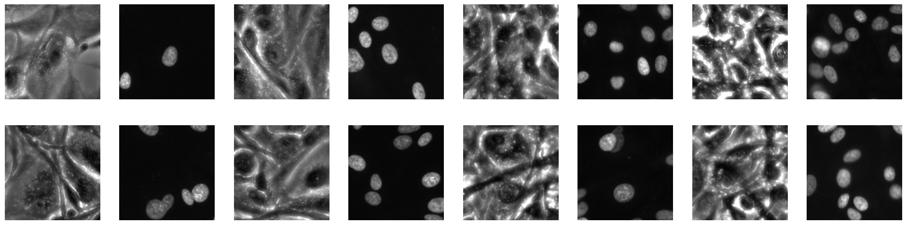
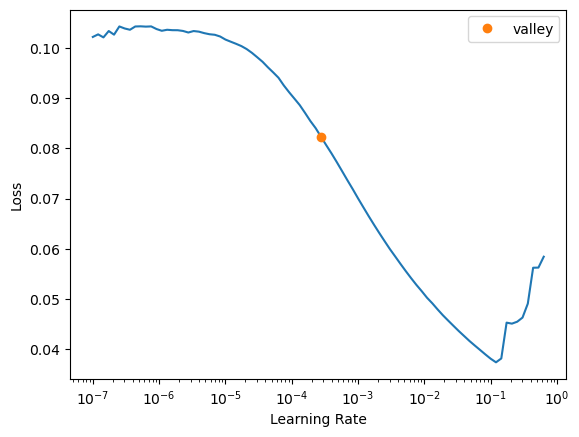
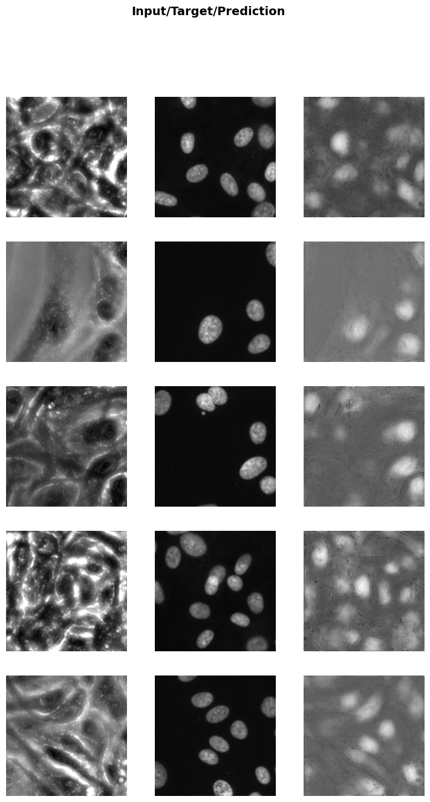

from bioMONAI.data import *
from bioMONAI.transforms import *
from fastai.vision.all import *
from monai.utils import set_determinism
set_determinism(0)
# from sklearn.model_selection import train_test_splitDemo: 2D image RI2FL
2D RI2FL demo
device = torch.device("cuda" if torch.cuda.is_available() else "cpu")
print(device)cudaData
bs, size = 8, 256
# arch = models.resnet34
path = Path('../../bioMONAI_0/_data/Thunder_20230308/nuevos_datos/dataset_2')
#path = Path('../_data/Babesia/')
path_x = path/'inputs'
path_y = path/'targets'from bioMONAI.core import get_target
get_target(path_y, same_filename=True)(path / '1.tiff')Path('../../bioMONAI_0/_data/Thunder_20230308/nuevos_datos/dataset_2/targets/1.tiff')Look at training data
from monai.transforms import ScaleIntensity
item_tfms = [ScaleIntensity(minv=0.0, maxv=1.0),
RandCropND(size),
]from bioMONAI.core import get_target
dblock = DataBlock(blocks=(BioImageBlock(cls=BioImageProject), BioImageBlock(cls=BioImage)),
get_items=get_image_files,
get_y=get_target(path_y, same_filename=True),
splitter=RandomSplitter(valid_pct=0.2),
item_tfms=item_tfms,
)
dblock.summary(path_x)
dls = dblock.dataloaders(path_x, bs=bs)
dls.show_batch(max_n=8, cmap='gray')Setting-up type transforms pipelines
Collecting items from ../../bioMONAI_0/_data/Thunder_20230308/nuevos_datos/dataset_2/inputs
Found 28 items
2 datasets of sizes 23,5
Setting up Pipeline: BioImageProject.create
Setting up Pipeline: get_target.<locals>.generate_target_path -> BioImage.create
Building one sample
Pipeline: BioImageProject.create
starting from
../../bioMONAI_0/_data/Thunder_20230308/nuevos_datos/dataset_2/inputs/1.tif
applying BioImageProject.create gives
BioImageProject of size 1x2048x2048
Pipeline: get_target.<locals>.generate_target_path -> BioImage.create
starting from
../../bioMONAI_0/_data/Thunder_20230308/nuevos_datos/dataset_2/inputs/1.tif
applying get_target.<locals>.generate_target_path gives
../../bioMONAI_0/_data/Thunder_20230308/nuevos_datos/dataset_2/targets/1.tif
applying BioImage.create gives
BioImage of size 1x2048x2048
Final sample: (BioImage([[[119., 124., 116., ..., 125., 122., 114.],
[127., 110., 111., ..., 115., 120., 120.],
[115., 112., 114., ..., 118., 117., 118.],
...,
[126., 123., 124., ..., 117., 114., 106.],
[127., 122., 128., ..., 119., 112., 109.],
[122., 126., 124., ..., 124., 118., 108.]]]), BioImage([[[6., 7., 7., ..., 6., 6., 6.],
[6., 6., 6., ..., 6., 7., 6.],
[6., 6., 6., ..., 6., 6., 6.],
...,
[6., 5., 7., ..., 8., 6., 7.],
[6., 6., 6., ..., 6., 6., 6.],
[6., 6., 6., ..., 7., 6., 6.]]]))
Collecting items from ../../bioMONAI_0/_data/Thunder_20230308/nuevos_datos/dataset_2/inputs
Found 28 items
2 datasets of sizes 23,5
Setting up Pipeline: BioImageProject.create
Setting up Pipeline: get_target.<locals>.generate_target_path -> BioImage.create
Setting up after_item: Pipeline: ScaleIntensity -> RandCropND -- {'size': (256, 256, 256), 'lazy': False, 'p': 1.0} -> ToTensor
Setting up before_batch: Pipeline:
Setting up after_batch: Pipeline: Tensor2BioImage -- {}
Building one batch
Applying item_tfms to the first sample:
Pipeline: ScaleIntensity -> RandCropND -- {'size': (256, 256, 256), 'lazy': False, 'p': 1.0} -> ToTensor
starting from
(BioImageProject of size 1x2048x2048, BioImage of size 1x2048x2048)
applying ScaleIntensity gives
(MetaTensor of size 1x2048x2048, MetaTensor of size 1x2048x2048)
applying RandCropND -- {'size': (256, 256, 256), 'lazy': False, 'p': 1.0} gives
(MetaTensor of size 1x256x256, MetaTensor of size 1x256x256)
applying ToTensor gives
(MetaTensor of size 1x256x256, MetaTensor of size 1x256x256)
Adding the next 3 samples
No before_batch transform to apply
Collating items in a batch
Applying batch_tfms to the batch built
Pipeline: Tensor2BioImage -- {}
starting from
(MetaTensor of size 4x1x256x256, MetaTensor of size 4x1x256x256)
applying Tensor2BioImage -- {} gives
(BioImage of size 4x1x256x256, BioImage of size 4x1x256x256)Setting affine, but the applied meta contains an affine. This will be overwritten.
Setting affine, but the applied meta contains an affine. This will be overwritten.
Setting affine, but the applied meta contains an affine. This will be overwritten.
Setting affine, but the applied meta contains an affine. This will be overwritten.
# training and validation
len(dls.train_ds.items), len(dls.valid_ds.items)(23, 5)Create and train a 2D model
from monai.networks.nets import BasicUNet, AttentionUnet, DynUNet, UNet, BasicUNet
from bioMONAI.nets import DnCNN# model = UNet(spatial_dims=2, in_channels=1, out_channels=1, channels=(16, 32, 64, 128, 256),strides=(2, 2, 2, 2), num_res_units=2).model
#model = UNet(spatial_dims=3, in_channels=1, out_channels=1, channels=(32, 64, 128, 256),strides=(1, 2, 2), num_res_units=2).model
# model = AttentionUnet(spatial_dims=2, in_channels=1, out_channels=1, channels=(16, 32, 64),strides=(1, 1))
#model = DynUNet(spatial_dims=2, in_channels=1, out_channels=1, strides=(1, 2, 2),kernel_size=(3, 3, 3), upsample_kernel_size=(2, 2), res_block=True) # it tends to create hot pixels
model = BasicUNet(spatial_dims=2, in_channels=1, out_channels=1)
model = model.to('cuda')BasicUNet features: (32, 32, 64, 128, 256, 32).from bioMONAI.losses import CombinedLoss
loss_func = mse #CombinedLoss()from bioMONAI.losses import SSIMMetric
metrics = [mae, mse, SSIMMetric]# learn = Learner(dls, model, loss_func=loss_func, opt_func=ranger, metrics=nn.L1Loss)
learn = Learner(dls, model, loss_func=loss_func, metrics=metrics, cbs=ShowGraphCallback())learn.summary()Setting affine, but the applied meta contains an affine. This will be overwritten.BasicUNet (Input shape: 8 x 1 x 256 x 256)
============================================================================
Layer (type) Output Shape Param # Trainable
============================================================================
8 x 32 x 256 x 256
Conv2d 320 True
InstanceNorm2d 64 True
Dropout
LeakyReLU
Conv2d 9248 True
InstanceNorm2d 64 True
Dropout
LeakyReLU
____________________________________________________________________________
8 x 32 x 128 x 128
MaxPool2d
Conv2d 9248 True
InstanceNorm2d 64 True
Dropout
LeakyReLU
Conv2d 9248 True
InstanceNorm2d 64 True
Dropout
LeakyReLU
____________________________________________________________________________
8 x 32 x 64 x 64
MaxPool2d
____________________________________________________________________________
8 x 64 x 64 x 64
Conv2d 18496 True
InstanceNorm2d 128 True
Dropout
LeakyReLU
Conv2d 36928 True
InstanceNorm2d 128 True
Dropout
LeakyReLU
____________________________________________________________________________
8 x 64 x 32 x 32
MaxPool2d
____________________________________________________________________________
8 x 128 x 32 x 32
Conv2d 73856 True
InstanceNorm2d 256 True
Dropout
LeakyReLU
Conv2d 147584 True
InstanceNorm2d 256 True
Dropout
LeakyReLU
____________________________________________________________________________
8 x 128 x 16 x 16
MaxPool2d
____________________________________________________________________________
8 x 256 x 16 x 16
Conv2d 295168 True
InstanceNorm2d 512 True
Dropout
LeakyReLU
Conv2d 590080 True
InstanceNorm2d 512 True
Dropout
LeakyReLU
____________________________________________________________________________
8 x 128 x 32 x 32
ConvTranspose2d 131200 True
Conv2d 295040 True
InstanceNorm2d 256 True
Dropout
LeakyReLU
Conv2d 147584 True
InstanceNorm2d 256 True
Dropout
LeakyReLU
____________________________________________________________________________
8 x 64 x 64 x 64
ConvTranspose2d 32832 True
Conv2d 73792 True
InstanceNorm2d 128 True
Dropout
LeakyReLU
Conv2d 36928 True
InstanceNorm2d 128 True
Dropout
LeakyReLU
____________________________________________________________________________
8 x 32 x 128 x 128
ConvTranspose2d 8224 True
Conv2d 18464 True
InstanceNorm2d 64 True
Dropout
LeakyReLU
Conv2d 9248 True
InstanceNorm2d 64 True
Dropout
LeakyReLU
____________________________________________________________________________
8 x 32 x 256 x 256
ConvTranspose2d 4128 True
Conv2d 18464 True
InstanceNorm2d 64 True
Dropout
LeakyReLU
Conv2d 9248 True
InstanceNorm2d 64 True
Dropout
LeakyReLU
____________________________________________________________________________
8 x 1 x 256 x 256
Conv2d 33 True
____________________________________________________________________________
Total params: 1,978,433
Total trainable params: 1,978,433
Total non-trainable params: 0
Optimizer used: <function Adam at 0x7f48689c3740>
Loss function: <function mse at 0x7f4868a20d60>
Callbacks:
- TrainEvalCallback
- CastToTensor
- Recorder
- ProgressCallback
- ShowGraphCallback# lr = learn.lr_find(suggest_funcs=(minimum, steep, valley, slide))
lr = learn.lr_find(suggest_funcs=(valley))
print(lr)SuggestedLRs(valley=0.0002754228771664202)
lr = float('%.1g'%(lr))
print(lr)0.0003learn.fit_flat_cos(200,lr)learn.show_results(cmap='gray')Setting affine, but the applied meta contains an affine. This will be overwritten.
# learn.save('tmp-model')Test data
Evaluate the performance of the selected model on unseen data. It’s important to not touch this data until you have fine tuned your model to get an unbiased evaluation!
Export learner
# store_variables(pkl_fn='vars.pkl', size=size, reorder=reorder, resample=resample)# learn.export('______.pkl')